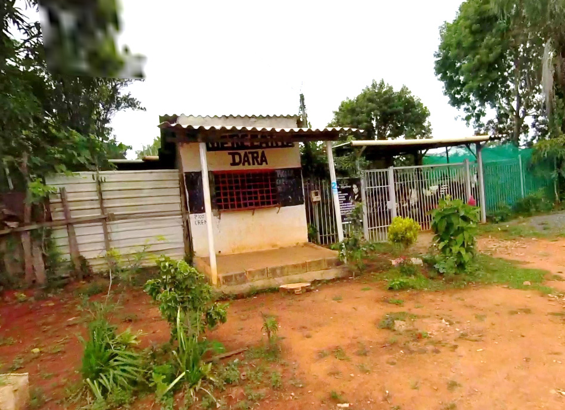
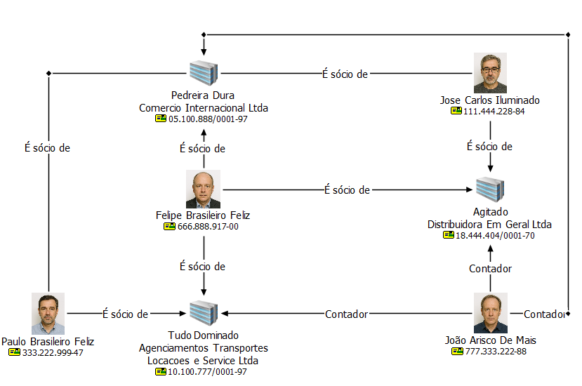

A formalização dos elementos de informação colhidos no curso da investigação criminal não se limita a uma exigência meramente burocrática, constituindo-se, na verdade, em etapa nuclear da atividade de polícia judiciária. Trata-se do mecanismo pelo qual os elementos obtidos são reduzidos a termo e organizados em peças formais, assegurando clareza, sistematicidade e fidedignidade.
Essa formalização é condição indispensável para os elementos informativos adquirirem densidade probatória e possam servir de suporte legítimo e seguro às decisões judiciais, administrativas e estratégicas, preservando-se, ao mesmo tempo, a cadeia de custódia e a conformidade com os princípios do devido processo legal.
Nessa perspectiva, a formalização não somente preserva a qualidade e a fidedignidade das informações, mas também reforça a legitimidade e a credi bilidade da atividade investigativa, garantindo que a atuação policial esteja em estrita conformidade com o ordenamento jurídico e alinhada a padrões técnico -científicos reconhecidos, prevenindo, assim, questionamentos futuros acerca da validade do material produzido.
O art. 9º do Código de Processo Penal dispõe que todas as peças do inquérito policial devem ser reunidas em um só processado e reduzidas a escrito. Essa exigência de formalização confere unidade, autenticidade e segurança ao pro cedimento investigativo, evitando dispersão documental e garantindo que cada ato praticado possa ser verificado e validado em juízo.
A redução a termo funciona como instrumento de controle da legalidade e da fidedignidade dos registros, assegurando que os elementos colhidos tenham valor probatório e possam ser utilizados de forma legítima na persecução penal. Trata-se, portanto, de uma regra que reforça a confiabilidade do inquérito policial, preservando sua integridade como peça informativa destinada a subsidiar o Ministério Público e o Poder Judiciário.
Já no ambiente interno da Polícia Federal, o regramento que disciplina a formalização dos atos investigativos é a Instrução Normativa nº 255/2023 – DG/ PF que regulamenta as atividades de polícia judiciária da Polícia Federal. Essa norma é dividida em seis capítulos e, em vários deles, existem disposições que guardam relação com a formalização de atos a partir de instrumentos ou meios de investigação disponíveis à polícia judiciária.
A Instrução Normativa 255/2023 – DG/PF, com suas alterações posteriores4, regulamenta as atividades de polícia judiciária dentro da Polícia Federal e, dessa forma, dispõe como os atos realizados no interesse do Inquérito Policial devem ser formalizados. Não será objeto de estudo neste capítulo os atos de formalização que não digam respeito a atos de internalização de dados de interesse obtidos no curso da investigação policial.
O § 3º do art. 2º da Instrução Normativa DG/PF nº 255/2023 estabelece um princípio fundamental da atuação da polícia judiciária da União, qual seja:
§ 3º As formas previstas para os procedimentos de polícia
judiciária não existem como fins em si mesmas, mas como meios
de se garantir a busca da verdade processualmente qualificada.
Isso significa que os atos formais e os ritos processuais não existem somente para cumprir formalidades burocráticas, mas devem ser utilizados com finali dade investigativa, garantindo que a apuração dos fatos seja eficaz, legítima e juridicamente válida. A norma reforça a ideia de que o processo investigativo deve ser orientado pela busca da verdade, respeitando os direitos fundamentais e os princípios do devido processo legal, sem se perder em excessos formais que comprometam a efetividade da investigação criminal.
Já o art. 4º reforça a modernização e a padronização dos procedimentos ao determinar que todos os procedimentos de polícia judiciária devem ter formato digital e ser cadastrados como casos no sistema oficial, senão vejamos:
Art. 4º Os procedimentos de polícia judiciária terão formato
digital e serão cadastrados como casos no sistema oficial de
polícia judiciária.
Essa norma institucionaliza o uso de sistemas informatizados como ferramenta obrigatória para registro, acompanhamento e gestão das investigações, promo vendo maior eficiência, segurança da informação e integração entre unidades. A digitalização dos procedimentos também facilita o controle interno, a transpa rência e o acesso por autoridades competentes, além de permitir a aplicação de inteligência policial sobre os dados registrados.
De acordo com a IN 255/2023, essa formalização ocorre essencialmente por meio de(a):
4 Alterada pelas IN’s 279/2024, 297/2024 e 308/2025.
(art. 88 a 102)
147 a 161)
Na confecção desses documentos, também chamados de peças, devem estar presentes algumas características ou princípios que assumem uma importância considerável, uma vez que poderão ter implicações na esfera da liberdade individual, através da aplicação de medidas cautelares ou penas no caso de condenação dos responsáveis.
Na produção dessas peças, é necessário atentar para as seguintes caracterís ticas que devem estar presentes na redação oficial (Brasil, 2018):
A redação policial deve ser clara, isto é, não deve dar margem a múltiplas interpretações, não deve ter termos ambíguos, nem termos genéricos. Quando, por exemplo, for apresentada uma situação de fato, as pessoas, empresas, lugares ou coisas presentes na situação devem ser devidamente identificadas para o leitor com a máxima precisão possível. Veja o texto abaixo:
“Dois indivíduos, um deles de casaco branco e outro de boné azul, adentraram no mato; um deles saiu e desferiu os tiros...”
Quem saiu do mato: o indivíduo de casaco branco ou o de boné azul? Há necessidade de ser claro e preciso ao informar quem é essa pessoa que saiu do mato.
Da mesma forma, em uma arrecadação de bens, por exemplo, é importante caracterizá-los a fim de impedir que sejam confundidos com outro bem. Além disso, devemos ser precisos ao informar onde se encontravam os bens, uma vez que um telefone na cozinha é diferente de um telefone na cabeceira da cama; porque, na segunda situação, seria razoável presumir que o telefone pertence à pessoa que dorme no local. O mesmo raciocínio pode ser feito em relação a uma sala de escritório, a um galpão ou a um veículo - quem são as pessoas que trabalham no local ou utilizam esse veículo? Uma redação clara e precisa abordaria essas questões.
Ao narrar uma situação, por mais absurda, ultrajante, desumana ou cruel, o policial deve-se eximir de registrar impressões pessoais, utilizando, por exemplo, os adjetivos “terrível”, “indignado”, “absurdo” ao se referir aos seus sentimentos: “ao entrar no local, notei que o ambiente era horrível a ponto de embrulhar o estômago”. Essas impressões podem ser narradas em sede de depoimento, quando questionado sobre a impressão pessoal, mas, na redação policial, devemos empregar termos objetivos, evitando ao máximo a pessoalidade.
Vejamos o seguinte exemplo de objetividade e impessoalidade na redação:
“Inicialmente a equipe chegou na feira dos importados e, durante a vigi lância, foi identificado o veículo MITISUBISHI PAJERO DAKAR, cor preta, placa PBW7508, dirigido por um homem de calça jeans e camisa bege, mangas curtas, tênis branco, chapéu e máscara. Esse homem estacionou e, ao saiu do veículo, encontrou-se com dois outros homens, um deles identificado como sendo DOMINGOS TORETO que estava de cachecol quadriculado (branco, cinza e preto), camisa preta, óculos escuros, calça jeans azul, conforme Foto 01; e um outro homem aparentando aproximadamente 60 anos, com barba, cabelos grisalhos, vestido de camisa preta, calça jeans azul. Não foi possível identificar até o momento a identidade do motorista e do acompanhante de DOMINGOS TORETO. Aparentemente, pelo modo como o motorista cumpri mentou DOMINGOS e o outro homem, os três se conhecem”.
A cena foi descrita com detalhes, de forma clara, precisa e não houve inclu são de nenhuma apreciação pessoal. Na conclusão do texto, foi realizada uma inferência sobre se conhecerem. Nos próximos tópicos, observaremos os tipos de inferência e seu cabimento.
O texto não deve conter informações que em nada contribuirão para o esclare cimento do fato; deve-se manter o foco no objetivo da diligência, sempre tendo em vista o tipo de crime que está sendo investigado, uma vez que determinados fatos podem ser irrelevantes para determinados tipos de crime, mas, para outros, podem ser imprescindíveis. Em uma apreensão relativa ao crime de tráfico de drogas, informar que as mídias apreendidas eram do filme tal ou continham as músicas tais e tais, de regra, não traria nenhuma contribuição para o esclarecimento dos fatos; já se a investigação trata de crime contra os direitos autorais, talvez essa informação seja imprescindível.
Em uma análise de uma conversa de aplicativo ou de correspondência, assuntos pessoais, dependendo do tipo de crime investigado, podem ser relatados detalhadamente ou não. Em um crime de violência contra criança, esses detalhes podem ser relevantes, mas podem não ter nenhuma relevância na apuração de um crime previdenciário.
Por conseguinte, produzir um texto conciso é manter o foco no que é essencial na diligência, evitando tratar de assuntos que não vão contribuir na elucidação do fato investigado.
Um texto coeso é um texto no qual o assunto principal que está sendo tratado é apresentado já no início e, no decorrer do texto, são apresentados assuntos secundários que desdobram, exemplificam ou explicam o assunto principal. Por isso, havendo vários assuntos secundários a serem tratados, é interessante utilizar títulos para separá-los, a fim de evitar que o texto fique confuso. Por exemplo, na análise de um crime no qual o suspeito recebe valores para adquirir bens contrabandeados, pode-se utilizar uma introdução explicando o contexto e os dados dos envolvidos, um tópico explicando o recebimento dos valores e outro tópico explicando a aquisição dos produtos. Dentro de cada tópico, podem constar as provas ou indícios, como conversas mantidas entre os interlocutores, extratos bancários e fotografias.
A coerência, por sua vez, “depende principalmente de uma ordem adequada e do emprego oportuno das partículas de transição (conjunções, advérbios, locuções adverbiais, certas palavras denotativas e os pronomes)” (Othon, 1988, p. 253).
Se, em um parágrafo, é apresentada uma situação e no parágrafo seguinte há uma conclusão da situação, o escritor deverá utilizar conjunções conclusivas para manter a coerência entre as ideias: “por conseguinte”, “assim”, “portanto”, “consequentemente” etc. Porém, se o parágrafo é uma explicação de uma afirmação, de um extrato bancários, de uma quebra de sigilo fiscal, de um docu mento apreendido, espera-se que contenha conjunções ou locuções conjuntivas explicativas: “visto que”, “uma vez que”, “isto é”, “ou seja”, “a saber”, “porque”, “dado que”, “já que” etc.
A coerência, portanto, seria esse encadeamento harmonioso e lógico entre as ideias expressas nos parágrafos.
Como vimos, todas as atividades policiais precisam ser formalizadas e, nessa formalização, há diversos modelos de documentos disponíveis no e-POL para auxiliar os policiais. Contudo, mesmo na ausência de um modelo específico, há um padrão de redação já consagrado pelo uso:
No início da redação, devemos procurar situar o leitor no tempo e no espaço;
Devem-se informar os nomes das pessoas que se encontravam no lugar ou tiveram contato com o fato – por padrão, utilizamos caixa alta para nomes de pessoas, órgãos e entidades públicas ou organizações privadas. As pessoas identificadas devem ter nomes completos e sua qualificação. Se não for possível identificar uma pessoa, deve-se deixar clara essa situação, mas devem ser descritas suas características físicas, para possibilitar, no futuro, sua identificação.
O fato ocorrido e seus desdobramentos devem ser descritos na ordem cro nológica de acontecimentos, isto é, fatos que ocorrem por último não devem ser apresentados em primeiro lugar, exceto se a pessoa que está narrando os fatos foi a que primeiro se apresentou diante do escritor. Nesse caso, deve-se narrar que primeiramente essa pessoa se apresentou ou entrou em contato e daí deve -se passar a registrar os fatos em ordem cronológica do que ocorreu segundo o relato dessa pessoa.
Exemplos:
“No dia, 13/09/2025, nesta Delegacia de Polícia Federal, em Londrina/PR, na presença de FULANO DE TAL, delegado de polícia federal, que determinou a qualificação de FULANO DE TAL... em seguida, o depoente foi alertado do compromisso de dizer a verdade e, inquirido a respeito dos fatos, RESPONDEU: QUE...” (introdução de um depoimento).
“Em 26 de setembro de 2025, às 19h, no KM 111 da BR290, município de Eldorado do Sul, os policiais rodoviários FULANO DE TAL e BELTRANO DE TAL prenderam em flagrante CICRANO DE TAL quando transportava 50.000 maços de cigarros estrangeiros no veículo Chevrolet S-10, quando trafegava no sentido interior-capital, tendo sido conduzido a esta Delegacia, o preso foi cientificado de seus direitos, dentre eles, permanecer em silêncio em relação aos fatos, respeito à sua integridade física e moral, receber assistência da família e de advogado, ter a prisão comunicada ao juiz e à família ou pessoa por ele indicada...” (introdução de um despacho de um flagrante).
“Por volta de 22h, este Plantão recebeu ligação da Polícia Militar, através do telefone (45) 995484168, de policial identificado como Soldado JOSÉ, dando conta que a viatura dos Correios, Fiat Fiorino, amarelo, placas POI0G88, que havia sido roubada na tarde de hoje, conforme Ocorrência Policial 123/2025, havia sido localizada na Rua Americana, em frente ao número 117, na cidade de Foz do Iguaçu/PR. Perguntado ao Policial se o estado da viatura havia sido alterado, foi informado que os Policiais Militares que a encontraram, fizeram buscas em seu interior, inclusive encontrando um aparelho celular. Diante disso, o Delegado de plantão, DPF ARNALDO ANTUNES foi informado dos fatos e determinou o acionamento da equipe de sobreaviso para que fosse até o local e trouxesse o veículo. Lá chegando a equipe de sobreaviso encontrou o veículo sendo guardado pelo Policial Militar Soldado João Jorge, que foi quem encontrou a viatura e ficou aguardando o seu devido recolhimento. Por volta de 02:20h a equipe retornou trazendo o veículo Fiat Fiorino dos Correios. Foi então, acionado o PCF CLÓVIS e o PPF JORGE para que procedessem os exames periciais.” (registro de uma ocorrência policial).
Note que nesses três exemplos, sempre há datas, horários, nomes de pessoas em caixa alta, e a descrição do ocorrido segue uma ordem cronológica de acontecimentos, com suas circunstâncias e desdobramentos.
As audiências no âmbito da Polícia Federal são classificadas em quatro tipos principais:
Todos esses atos demandam registros formais. O artigo 49 da IN 255/2023 estabelece que todas as audiências realizadas no âmbito da Polícia Federal devem ser gravadas, com o conhecimento dos participantes, e posteriormente anexadas ao respectivo procedimento investigativo. Além disso, deve ser lavrado um termo que registre os nomes dos presentes, o meio utilizado para a realização da audiência (presencial ou remoto), bem como a data e os horários de início e término.
Caso não seja possível realizar a gravação, o conteúdo da audiência deverá ser integralmente registrado por escrito nesse termo, que será assinado por todos os participantes, garantindo a formalidade e a autenticidade do ato.
| Regra | Exceção |
|---|---|
| Gravar a audiência e lavrar termo sem necessidade de consignar a integrali dade do conteúdo.5 | Não sendo possível gravar a audiência, o termo deverá constar a integralidade do conteúdo da audiência.6 |
Além disso, entrevistas investigativas podem ser realizadas por policiais federais, desde que não envolvam o próprio investigado ou questões complexas, registradas em informação de polícia judiciária e, se possível, acompanhadas de gravação7.
ENTREVISTA > INFORMAÇÃO DE POLÍCIA JUDICIÁRIA + GRAVAÇÃO
(quando for possível)
No que se refere à acareação, os artigos 229 e 230 do Código de Processo Penal a tratam como instrumento formal de esclarecimento de divergências entre declarações prestadas por acusados, testemunhas, vítimas ou pessoas ofendidas. A acareação é admitida sempre que houver contradições relevantes, e os envolvidos são reperguntados para explicar os pontos de conflito, sendo o ato devidamente formalizado em termo escrito e assinado. 5 Art. 49. As audiências serão gravadas, com a ciência dos presentes, carregadas e anexadas
ao caso, lavrando-se termo com registro daqueles que a ela compareceram, o meio pelo
qual foi realizada, data e hora de início e término. 6 Parágrafo único. Não sendo possível a gravação, o conteúdo da audiência será registrado
no termo referido no caput, que será assinado pelos presentes. 7 Art. 51 da IN 255/2023 - Poderá ser determinada a realização de entrevistas por policial
federal no interesse da investigação, quando não envolver questões complexas e não se
tratar do próprio investigadoParágrafo único. A entrevista será registrada em informação de
polícia judiciária, acompanhada, quando possível, da gravação do ato.
Consoante o art. 52 da IN 255/2023, o reconhecimento de pessoas observará as regras previstas no Código de Processo Penal.
Os artigos 226 a 228 do Código de Processo Penal tratam do reconhecimento de pessoas e objetos, enfatizando a formalização rigorosa do ato para garantir sua validade e integridade. O procedimento inicia-se com a descrição da pessoa a ser reconhecida, seguida de sua apresentação ao lado de outras com características semelhantes, de modo a evitar induções. Quando houver risco de intimidação, o reconhecimento deve ser feito sem que o reconhecido veja o reconhecedor.
O ato deve ser formalizado por meio de auto circunstanciado que descreva o procedimento adotado de forma pormenorizada8, assinado pela autoridade, pelo reconhecedor e por duas testemunhas presenciais, assegurando a autenticidade e a legalidade do procedimento. O reconhecimento de objetos segue os mesmos cuidados, e quando houver múltiplos reconhecedores, cada um deve realizar o ato separadamente, evitando qualquer comunicação entre eles, reforçando a imparcialidade e a confiabilidade da prova.
Com base na IN 255/2023 da Polícia Federal, observa-se que o processo de formalização dos exames periciais é realizado, em regra, por meio de laudo pericial. As requisições de exame devem ser dirigidas ao chefe da unidade de perícia criminal federal competente, acompanhadas dos respectivos termos de apreensão e distribuídas imediatamente aos peritos. Em situações de flagrância ou urgência, admite-se a apresentação imediata de laudo ou documento técnico que justifique sua ausência.
Importante destacar que as Unidades Técnico-Científicas são setores e núcleos onde são realizados os exames periciais na Polícia Federal. Há unidades em cada superintendência regional, bem como em algumas delegacias estratégicas, salientando que os exames periciais devem ser requisitados para a unidade da própria circunscrição. Importante constar ainda que os exames não serão neces sariamente realizados na Unidade Técnico-Científica que recebeu a requisição. O Sistema Nacional de Criminalística (SNC) realiza distribuições dos exames entre as unidades, buscando a otimização dos recursos humanos e materiais, a eficiência administrativa e a excelência científica.
A IN ainda prevê que transcrições fonográficas e demais descrições do 8 Art. 226, IVdo CPP -do ato de reconhecimento lavrar-se-á auto pormenorizado, subscrito
pela autoridade, pela pessoa chamada para proceder ao reconhecimento e por duas teste
munhas presenciais. conteúdo de registros de áudio e imagem serão realizadas por servidor policial designado pela autoridade policial de polícia federal, salvo quando houver questionamentos sobre a autenticidade ou identificação do locutor, caso em que o exame será realizado por perito criminal federal. Caso realizado por servidor policial, esse deverá lavrar um documento do tipo informação de polícia judiciária com o objetivo de consignar a transcrição ou descrição dos registros de áudio ou vídeo.
A IN 255/2023 dispõe que outros atos de investigação serão formalizados por meio de dois documentos:
Trata-se de um relatório que pode ser produzido por qualquer policial federal e que deve ser produzido para registrar informações relevantes que tenham sido noticiadas ao policial federal ou que resultem de pesquisas, análise, deflagração de operação policial, entrevistas, vigilância ou outras diligências. A IPJ é um documento de polícia judiciária, isto é, seu conteúdo é investigativo e, portanto, pode ser anexado a um procedimento dessa natureza.
De acordo com a doutrina, relatórios podem ter duas naturezas distintas. Podem ser relatórios do tipo informativo (também chamado de expositivo) ou do tipo argumentativo (também chamado de valorativo).
Relatórios informativos apresentam dados ou informam sobre determinadas condições ou situações sem necessidade, predominantemente, de exercício de crítica por parte do redator. Dito de outro modo, são documentos objetivos. Por exemplo: quando um policial é demandado a identificar o endereço de um investigado, ele pode acessar bancos de dados ou realizar outras atividades e, ao final, registrar a diligência em uma Informação de polícia judiciária de forma objetiva, sem o uso predominante de juízo de valor.
Já os relatórios de natureza argumentativa apresentam dados em cotejo com outros elementos, de forma a analisar criticamente os fatos e apresentar conclusões, geralmente baseadas em método dedutivo. Seu caráter é predomi nantemente valorativo. Por exemplo: quando um policial é demandado a realizar análises (bancária, RIF, fiscal, material apreendido, documentos etc.), ao cabo, deve registrar as diligências em uma Informação de polícia judiciária de natureza argumentativa.
Como dito, neste tipo de documento, o conteúdo é meramente informativo. Exemplo: “De acordo com pesquisas realizadas nas bases de dados acessíveis a este signatário por prerrogativa do cargo, FULANO DE TAL, CPF 000.000.000-00, declara endereço na Rua Xingu, 125, Bairro Aroeira, Cidade Nova. Em diligência no local restou constatado que o referido reside, de fato, nesse endereço”. Exemplo: “O veículo TOYOTA COROLLA, placa XYZ-1D45, está sendo usado pelo investigado FULANO TAL, CPF 000.000.000-00. Pesquisas nos bancos de dados acessíveis a este signatário por prerrogativa do cargo, resultaram que o referido veículo está registrado em nome de BELTRANO MIGUÉ DE TAL, CPF 111.222.333-44”. Sugere-se dar destaque a nomes e identificadores com escrita em caixa alta. Para a elaboração adequada de uma Informação de polícia judiciária (IPJ) com caráter informativo e objetivo, recomenda-se a observância dos seguintes passos:
Recomenda-se o uso da técnica “comentário x apresentação”, que consiste em:
Por exemplo: “De acordo com pesquisas realizadas nas bases de dados acessíveis a este signatário por prerrogativa do cargo, FULANO DE TAL, CPF 000.000.000-00, declara endereço na Rua Xingu, 125, Bairro Aroeira, Cidade Nova. Em diligência no local, restou constatado que o referido reside, de fato, nesse endereço”. Segue a foto do endereço.

Figura 44 - Exemplo de inserção: Figura 00- Rua Xingu, 125 - Coordenadas
-16.126981396524496, -48.04106330266362
A IPJ de natureza argumentativa é um instrumento técnico destinado, geral mente, àanálise de elementos de informação coletados por meio de investigação, com o objetivo desustentar uma hipótese investigativapor meio de raciocínio lógico, evidências verificáveis e método dedutivo. Para garantir sua eficácia, recomenda-se que a IPJ contenha, no mínimo, as quatro seções seguintes:
Quadro 2-Sugestão da Seção Dados do Procedimento de uma IPJ
argumentativa
| Número do procedimento | |
|---|---|
| Tipo do procedimento | |
| Tipo de Análise | |
| Referências | |
| Destinatário | |
| Remetente | |
| Data |
A correta vinculação documental é essencial para garantir a rastreabilidade, a autenticidade e a inserção adequada da IPJ no fluxo investigativo.
É fundamental não confundir o objeto com o objetivo da IPJ. O objeto é oele mento material ou digitalque será examinado, e sua descrição deve ser precisa, técnica e obedecer aos princípios dacadeia de custódia. A redação da seção do objeto na IPJ deve conter inicialmente sua identificação pormenorizada, isto é, do que se trata. Deve ainda informar a origem institucional do objeto e o meio de investigação empregado para obtê-lo; e ainda como ele foi coletado (obtido) pela Polícia Federal. Exemplo de redação: “Trata-se de conjunto de dados telemáticos encaminhados pela (GOOGLE, APPLE, MICROSOFT etc.), referentes aos endereços eletrônicos: CITAR ENDEREÇOS, em cumprimento à ordem judicial – Ofício NNNNN/AAAAA da Vara Judicial Federal de XXXXXX. Nome do arquivo e hashs dos arquivos: 659967-BACKUP-6844737.zip.gpg - fc36e6b919b187e7c05e7dbaa93d 0c0067a8a35eb740ae6cceae7596d66c5e4d (…). A empresa GOOGLE disponibilizou os arquivos pelo portal LERS com privilégio de acesso a FULANO DE TAL. Após acesso ao LERS os dados foram baixados. A empresa MICROSOFT disponibilizou os arquivos pelo portal LePortal com privilégio de acesso a FULANO DE TAL. Após acesso ao LERS os dados foram baixados. A empresa APPLE encaminhou email para FULANO DE TAL contendo link e senha para acesso a nuvem. Após acesso ao ambiente de APPLE os dados foram baixados.” Os dados da seção objeto, também poderão ser apresentados em tabela.
| Identificação do objeto | Trata-se de conjunto de dados telemáticos encaminhados pela (GOOGLE, APPLE, MICROSOFT etc.), referentes aos endereços eletrônicos: CITAR ENDEREÇOS, em cumpri mento à ordem judicial – Ofício NNNNN/AAAAA da Vara Judicial Federal de XXXXXX. Nome do arquivo e hashs dos arquivos: 659967-BACKUP-6844737.zip.gpg - fc36e6b 919b187e7c05e7dbaa 93d0c0067a8a35eb740ae6cceae7596d66c5e4d |
|---|---|
| Origem do Objeto | Empresa GOOGLE ou MICROSOFT ou APPLE |
| Coleta do Objeto | A empresa GOOGLE disponibilizou os arquivos pelo portal LERS com privilégio de acesso a FULANO DE TAL. Após acesso ao LERS, os dados foram baixados. A empresa MICROSOFT disponibilizou os arquivos pelo portal LePortal com privilégio de acesso a FULANO DE TAL. Após acesso ao LERS os dados foram baixados. A empresa APPLE enca minhou email para FULANO DE TAL contendo link e senha para acesso a nuvem. Após acesso ao ambiente de APPLE os dados foram baixados. |
| Transferência do Objeto | Os dados foram disponibilizados para este signatário através do ofício nº 0000/2025 contendo um HD em anexo em cujo conteúdo havia um arquivo assim identificado: 659967-BACKUP-6844737.zip.gpg - fc36e6b919b187e 7c05e7dbaa 93d0c0067a8a35eb740ae6cceae7596d66c5e4d |
O processo analítico tem início com a separação dos elementos informacionais. Antes de qualquer aprofundamento, realiza-se uma pré-análise da fonte de dados, etapa em que se aplica a técnica de leitura flutuante proposta por Laurence Bardin. Essa leitura preliminar, livre e exploratória, permite ao analista familiarizar-se com o conteúdo, identificar padrões iniciais e distinguir os elementos potencialmente relevantes dos irrelevantes.
Os dados considerados relevantes devem ser destacados ou etiquetados como “IMPORTANTE” (ou outra etiqueta a critério do policial), especialmente quando se utilizam ferramentas eletrônicas que permitem marcações, como Iped ou UFED. Já os dados sem pertinência à hipótese investigativa podem ser sinalizados como “IRRELEVANTE” (ou outra etiqueta a critério do policial). Essa seleção inicial orienta o foco analítico para os elementos que guardam relação direta com os objetivos da investigação.
Em seguida, os elementos tidos como importantes devem ser organizados por categorias temáticas, como imóveis, veículos, pagamentos, documentos, entre outros, sempre de acordo com o contexto investigativo. Quando necessário, essas categorias podem ser subdivididas em subcategorias específicas, como ‘Apartamento na Rua X’ ou ‘Transferência bancária em 12/03/2023’. Essa orga nização facilita a compreensão dos conjuntos informativos e permite uma análise mais precisa e segmentada.
Com os elementos organizados, o redator realiza a análise profunda, verifi cando a relação de cada dado com o contexto investigativo. Os elementos que efetivamente sustentam a hipótese devem ser considerados ou marcados como ‘EVIDÊNCIA’ (ou outra etiqueta a critério do policial), ou seja, dados que conectam o objeto da análise à hipótese formulada.
A apresentação dos elementos na IPJ deve seguir uma estrutura lógica compatível com os objetivos da investigação. Métodos recomendados incluem o comparativo, para contrastar dados; o causal, para demonstrar relações de causa e efeito; o cronológico, para ordenar eventos no tempo; o hierárquico, para apresentar os elementos por grau de relevância; e o narrativo, útil em análises administrativas ou de vigilância.
Para redigir a análise, recomenda-se o uso da técnica ‘comentário x apresenta ção’. O redator deve contextualizar o elemento, explicando sua origem, relevância e relação com o objeto da IPJ, e em seguida apresentar o dado propriamente dito, por meio de texto, tabela, imagem, diagrama, QR Code ou outro formato adequado. Essa técnica é eficaz para tornar os dados inteligíveis e úteis. A redação deve ser objetiva e baseada em fatos. Não antecipe conclusões na seção da Análise. Conectores e elementos de transição devem ser utilizados para garantir fluidez textual, como ‘em primeiro lugar’, ‘por conseguinte’, ‘em suma’, entre outros, tais como os apresentados a seguir.
Quadro 3-onte: Comunicação em Prosa Moderna. Othon M. Garcia.
| Finalidades | Termos |
|---|---|
| Prioridade, relevância | Em primeiro lugar, acima de tudo, precipuamente, princi palmente, primordialmente, sobretudo. |
| Tempo (frequência, dura ção, ordem, sucessão, anterioridade, posteri dade) | Então, enfim, logo, logo depois, imediatamente, logo após, a princípio, pouco antes, pouco depois, anteriormente, pos teriormente, em seguida, afinal, por fim, finalmente, agora, atualmente, hoje, frequentemente, constantemente, às vezes, eventualmente, por vezes, ocasionalmente, sempre, raramente, não raro, ao mesmo tempo, simultaneamente, nesse ínterim, nesse meio tempo, enquanto, quando, antes que, depois que, logo que, sempre que, desde que, todas as vezes que, cada vez que, somente. |
| Semelhança, comparação, conformidade | Igualmente, da mesma forma, assim também, do mesmo modo, similarmente, semelhantemente, analogamente, por analogia, de maneira idêntica, de conformidade com, de acordo com, segundo, conforme, sob o mesmo ponto de vista, tal qual, tanto quanto, como, assim como, bem como. |
| Condição, hipótese | Se, caso, eventualmente, desde que, contanto que, a não ser que, salvo se, como, conforme, segundo, de acordo com, em conformidade com, consoante, para, em consonância. |
| Alternância | Ou, ora…ora, já…já, seja…seja, quer...quer. |
| Explicação | Pois, porque, por, porquanto, uma vez que, visto que, já que, em virtude de. |
| Fazer concessão | Apesar de, embora, ainda que, se bem que, por mais que, por menos que, por melhor que, por muito que, mesmo que |
| Para concluir | Portanto, por isso, assim sendo, por conseguinte, conse quentemente, então, deste modo, desta maneira, em vista disso, diante disso, mediante o exposto, em suma, em síntese, em conclusão, enfim, em resumo, portanto, assim, dessa forma, dessa maneira, logo, pois, portanto, pois, (depois do verbo), com isso, desse/deste modo; dessa/ desta maneira, dessa/desta forma, assim, em vista disso, por conseguinte, então, logo, destarte. |
| Para incluir | Também, inclusive, igualmente, até (inclusive) |
| Adição, continuação | Além disso, outrossim, ainda mais, ainda por cima, por outro lado, também e as conjunções aditivas (e nem, não só…mas também e, nem, também, ainda além de, não somente…como também, não só…bem como, também, inclusive igualmente, até, bem como, não só… mas ainda, não somente mas também, além de, com efeito, por outro lado, ainda, realmente, ora, acrescentando-se que, acrescente-se que, saliente-se ainda que, paralelamente, além disso, ademais, além do mais, além do que, tanto… quanto, como se não bastasse, tanto… como. |
|---|---|
| Dúvida | Talvez, provavelmente, possivelmente, quiçá, quem sabe, é provável, não é certo, se é que. |
| Certeza, ênfase | De certo, por certo, certamente, indubitavelmente, inques tionavelmente, sem dúvida, inegavelmente, com toda a certeza. |
| Surpresa, imprevisto | Inesperadamente, inopinadamente, de súbito, imprevista mente surpreendentemente. |
| Ilustração, esclarecimento | Por exemplo, isto é, quer dizer, em outras palavras, ou por outra, a saber. |
| Propósito, intenção, Finalidade | Com o fim de, a fim de, com o propósito de |
| Lugar, proximidade, distância | Perto de, próximo a ou de, junto a ou de, dentro fora, mais adiante, além, acolá, lá, ali, algumas preposições e os pronomes demonstrativos. |
| Resumo, recapitulação, conclusão | Em suma, em síntese, enfim, em resumo, portanto, assim, dessa forma, dessa maneira, por isso, assim sendo, por conseguinte, consequentemente então, deste modo, desta maneira, em vista disso, diante disso. |
| Causa, consequência e explicação | Assim, de fato, com efeito, que, já que, uma vez que, visto que, por conseguinte, logo, pois (posposto ao verbo), então consequentemente, em vista disso, diante disso, em vista do que, de (tal) sorte que, de (tal) modo que de, (tal) maneira que…, por consequência, como resultado, tão…que, tanto…que, tamanha(o)…que, tal … que…,decorrente de, em decorrência de, consequentemente, com isso, que, porque, pois, como, por causa de, já que, uma vez que, porquanto; na medida em que, visto que. |
| Contraste, oposição, restrição, ressalva | Pelo contrário em contraste com, salvo, exceto, menos, mas, contudo, todavia, entretanto, embora, apesar, ainda que, mesmo que, posto que, conquanto que, se bem que, por mais que, por menos que, porém, contudo, todavia, entretanto, no entanto, não obstante, senão, opor-se, contrariar, negar, impedir, surgir em oposição, surgir em contraposição apresentar em oposição, ser contrário. |
| Afirmação | Consistir, constituir, significar, denotar, mostrar, traduzir-se por, expressar, representar, evidenciar. |
|---|---|
| Causalidade | Causar, motivar, originar, ocasionar, gerar, propiciar, resultar, provocar, produzir, contribuir, determinar, criar. |
| Finalidade | Visar, ter em vista, objetivar, ter por objetivo, pretender, tencionar, cogitar, tratar, servir para, prestar-se para. |
| Palavras de transição | Inicialmente (começo introdução) desde já (começo introdução) a princípio, a priori (começo), em primeiro lugar (começo), além disso (continuação), do mesmo modo (continuação), acresce que (continuação), ainda por cima (continuação), bem como (continuação), outrossim (continuação), enfim (conclusão), dessa forma (conclusão), em suma (conclusão), nesse sentido (conclusão), portanto (conclusão), afinal (conclusão), logo após (tempo), oca sionalmente (tempo), posteriormente (tempo) atualmente (tempo), enquanto isso (tempo), imediatamente (tempo), não raro (tempo), concomitantemente (tempo), igualmente (semelhança, conformidade), segundo (semelhança, con formidade), conforme (semelhança conformidade) assim também (semelhança, conformidade), de acordo com (semelhança, conformidade), daí (causa e consequência), por isso (causa e consequência), de fato (causa e consequ ência), em virtude de (causa e consequência), assim (causa é consequência) naturalmente (causa e consequência), então (exemplificação esclarecimento), por exemplo (exemplificação, esclarecimento) isto é (exemplificação esclarecimento), a saber (exemplificação, esclarecimento), em outras palavras (exemplificação esclarecimento), ou seja (exemplificação esclarecimento) quer dizer (exemplificação esclarecimento) rigorosamente esclarecimento). |
| Contraste, oposição, restrição, ressalva | Pelo contrário em contraste com, salvo, exceto, menos, mas, contudo, todavia, entretanto, embora, apesar, ainda que, mesmo que, posto que, conquanto que, se bem que, por mais que, por menos que, porém, contudo, todavia, entretanto, no entanto, não obstante, senão, opor-se, contrariar, negar, impedir, surgir em oposição, surgir em contraposição apresentar em oposição, ser contrário. |
| Afirmação | Consistir, constituir, significar, denotar, mostrar, traduzir-se por, expressar, representar, evidenciar. |
| Causalidade | Causar, motivar, originar, ocasionar, gerar, propiciar, resultar, provocar, produzir, contribuir, determinar, criar. |
| Finalidade | Visar, ter em vista, objetivar, ter por objetivo, pretender, tencionar, cogitar, tratar, servir para, prestar-se para. |
Inicialmente (começo introdução) desde já (começo introdução) a princípio, a priori (começo), em primeiro lugar (começo), além disso (continuação), do mesmo modo (continuação), acresce que (continuação), ainda por cima (continuação), bem como (continuação), outrossim (continuação), enfim (conclusão), dessa forma (conclusão), em suma (conclusão), nesse sentido (conclusão), portanto (conclusão), afinal (conclusão), logo após (tempo), oca sionalmente (tempo), posteriormente (tempo) atualmente (tempo), enquanto isso (tempo), imediatamente (tempo), não raro (tempo), concomitantemente (tempo), igualmente (semelhança, conformidade), segundo (semelhança, con formidade), conforme (semelhança conformidade) assim também (semelhança, conformidade), de acordo com (semelhança, conformidade), daí (causa e consequência), por isso (causa e consequência), de fato (causa e consequ ência), em virtude de (causa e consequência), assim (causa é consequência) naturalmente (causa e consequência), então (exemplificação esclarecimento), por exemplo (exemplificação, esclarecimento) isto é (exemplificação esclarecimento), a saber (exemplificação, esclarecimento), em outras palavras (exemplificação esclarecimento), ou seja (exemplificação esclarecimento) quer dizer (exemplificação esclarecimento) rigorosamente esclarecimento). Palavras de transição Durante a análise, é possível que o redator se depare com encontros fortuitos, elementos relevantes fora do escopo da análise. Esses dados devem ser regis trados, preferencialmente em documento apartado, após reunião com a equipe investigativa para definição da melhor estratégia de apresentação. É essencial demonstrar a relação entre o investigado e os dados analisados. Por exemplo, ao examinar e-mails, deve-se comprovar que o endereço eletrônico pertence ao investigado, evitando alegações futuras de desvinculação. A padronização visual da seção é recomendada, com títulos e subtítulos numerados, destacando cada categoria ou subcategoria analisada. Isso facilita a leitura e a navegação no documento, especialmente em investigações complexas.
A estrutura recomendada é:
Exemplo de conclusão indutiva:
Quadro 4-método dedutivo de conclusão
Com efeito, a realização de operações financeiras fracionadas e incompa tíveis com a capacidade econômica do titular constitui mecanismo frequente mente utilizado para ocultar ou dissimular a origem ilícita de valores. No caso concreto, verificou-se que o investigado, sem renda formal compatível, efetuou diversos depósitos fracionados em sua conta bancária, provenientes de terceiros, circunstância que permite concluir pela existência de indícios de possível prática de lavagem de dinheiro.
Como vimos, o método dedutivo é uma forma de raciocínio lógico que parte de premissas gerais ou regras previamente estabelecidas para chegar a uma conclusão específica. Nesse método, se as premissas forem verdadeiras e o raciocínio estiver correto, a conclusão também será necessariamente verdadeira. Em outras palavras, trata-se de aplicar uma regra geral a um caso concreto para extrair uma conclusão lógica.
Estrutura lógica básica:
Na investigação criminal, este método é especialemnte útil quando não se tem uma prova direta, mas há um conjunto de indícios que, analisados em conjunto, apontam para uma determinada hipótese.
Vamos destacar no exemplo os elementos que caracterizam o raciocínio dedutivo (exemplo aplicado à lavagem de dinheiro):
Premissa maior: Operações financeiras fracionadas e incompatíveis com a capacidade econômica do titular podem indicar tentativa de ocultação ou dissimulação de valores, característica típica da lavagem de dinheiro.
Premissa menor: Um investigado, sem renda formal compatível, realizou diversos depósitos fracionados em sua conta bancária provenientes de terceiros.
Conclusão: As operações financeiras realizadas pelo investigado podem caracterizar indícios de lavagem de dinheiro, devendo ser objeto de investigação.”
Através do método abdutivo, diante das várias hipóteses levantadas, o escritor deverá informar qual a mais provável e explicar o motivo, descartando de forma clara as mais improváveis.
Nas IPJs de natureza argumentativa, utilizando-se qualquer um dos métodos, é possível fazem boas conclusões, mas o escritor deve sempre estar ciente dos fundamentos que sustentam o raciocínio e, por conseguinte, sua conclusão.
Ao tratar de vínculos societários, familiares ou funcionais entre pessoas físicas e jurídicas, recomenda-se o uso detabelas estruturadasediagramas de vínculos. Essa abordagem permite visualizar com clareza as relações entre os envolvidos, facilitando a análise por todos os operadores do sistema de justiça criminal.
Quando o policial for demandado a identificar os vínculos societários de múltiplas empresas, por exemplo, três, a forma mais eficaz de apresentação é por meio detabela de qualificaçãoacompanhada dediagrama de vínculos. Essa estrutura permite visualizar com clareza as relações entre pessoas físicas e jurídicas envolvidas, facilitando a análise e a compreensão dos dados por todos os operadores do sistema de justiça criminal.

Figura 45 - Boa prática – vínculos.
Quadro 5-Exemplo de boa prática
| Foto | Qualificação |
|---|---|
| NOME:FELIPE BRASILEIRO FELIZ CPF: 666.888.917-00 FILIAÇÃO: FULANO DE TAL e SICRANA DE TAL VÍNCULOS SOCIETÁRIOS: • PEDREIRA DURA COMÉRCIO INTERNACIONAL LTDA, CNPJ 05.100.888/0001-97 • TUDO DOMINADO AGENCIAMENTOS, TRANSPORTES, LOCAÇÕES E SERVICE LTDA; CNPJ 10.100.777/0001-97 • AGITADO DISTRIBUIDORA EM GERAL LTDA, CNPJ 18.444.404/0001-70 | |
| NOME: JOSE CARLOS ILUMINADO CPF: 111.444.228-84 FILIAÇÃO: VÍNCULOS SOCIETÁRIOS: • PEDREIRA DURA COMÉRCIO INTERNACIONAL LTDA, CNPJ 05.100.888/0001-97 • AGITADO DISTRIBUIDORA EM GERAL LTDA, CNPJ 18.444.404/0001-70 | |
| NOME:PAULO BRASILEIRO FELIZ CPF: 333.222.999-47 FILIAÇÃO: VÍNCULOS SOCIETÁRIOS: • PEDREIRA DURA COMÉRCIO INTERNACIONAL LTDA, CNPJ 05.100.888/0001-97 • TUDO DOMINADO AGENCIAMENTOS, TRANSPORTES, LOCAÇÕES E SERVICE LTDA; CNPJ 10.100.777/0001-97 | |
| NOME:JOÃO ARISCO DE MAIS CPF: 777.333.222-88 FILIAÇÃO: • VÍNCULOS SOCIETÁRIOS: • CONTABILIDADE LIMPA-TRILHO, CNPJ 44.555.666/0001-77 |
Sempre que possível, complemente os endereços comcoordenadas geográficas (latitude e longitude). Isso permite a integração com sistemas de georreferen ciamento, facilita diligências futuras e contribui para a precisão espacial da investigação.
A utilização deQR Codesem Informações de polícia judiciária representa uma solução prática e eficiente para o acesso rápido a conteúdos complementares, como:
Essa prática contribui para adescentralização inteligente da informação, evitando o congestionamento documental e permitindo que o leitor acesse o conteúdo diretamente por meio de dispositivos móveis ou sistemas corporativos.
Todo elemento visual deve conterlegenda explicativa, indicando o conteúdo, a fonte e o contexto. Legendas qualificam a informação, evitam interpretações equivocadas e reforçam o valor documental do material apresentado.
Para inserir legendas, utilize o menu “Referências” do Word e depois clique em “Inserir Legenda”.
Uso de linguagem objetiva apontando fatos e não opiniões: A redação deve serimpessoal, técnica e objetiva, com foco na apresentação defatos verificáveis, e não de opiniões ou juízos de valor. Evite adjetivações, especulações ou inferências não fundamentadas. Mas, não tenha receio de apontar fatos ou até mesmo conclusões lógicas baseadas em método dedutivo.
Utilize fontes confiáveis e documentadas e registre a origem dos dados (sistemas, documentos, entrevistas, diligências) e, sempre que possível, preserve evidências da coleta para fins de rastreabilidade e cadeia de custódia.
Estruture a IPJ de forma lógica, com introdução, desenvolvimento e conclusão. Agrupe os dados por temas ou por relevância investigativa, facilitando a leitura e a compreensão.
Antes da finalização, revise o texto quanto à coerência, ortografia, gramática e conformidade com os padrões institucionais. Uma IPJ bem redigida transmite profissionalismo e fortalece a credibilidade da investigação.
O uso de ferramentas de inteligência artificial, como oCopilot, representa uma inovação relevante na produção de documentos investigativos. Ao empregar o Copilot, o policial pode:
ATENÇÃO: Utilize o Copilot como apoio técnico para redação, estrutu ração e revisão de IPJ’s, mantendo o controle sobre o conteúdo e a responsa bilidade sobre a informação.
Uma prática que deve ser evitada na produção de Informações de polícia judiciária (IPJ) é a anexação de páginas em PDF contendo dados brutos exportados diretamente de sistemas, sem qualquer tratamento visual, síntese ou contextua lização.
Esse tipo de apresentação, embora tecnicamente correta quanto à origem dos dados, prejudica a inteligibilidade,congestiona o procedimento investigati voedificulta a análise por parte dos operadores do sistema de justiça criminal. Informações dispersas, mal organizadas ou excessivamente volumosas tendem a ser ignoradas ou mal interpretadas.
Uma péssima apresentação de sua informação seria usar uma página para escrever “Seguem as informações requisitadas” e, em seguida, anexar inúmeras páginas exportadas em PDF, obtidas em bancos de dados com os vínculos societários.
O uso de ferramentas tecnológicas, como inteligência artificial, é altamente recomendável para apoiar a produção de IPJ’s. No entanto,delegar integralmente a redação sem realizar uma análise crítica do conteúdo geradocompromete a qualidade, a precisão e a responsabilidade técnica do documento.
A IPJ é um instrumento oficial que pode subsidiar decisões judiciais, diligências investigativas e medidas cautelares. Por isso, o policial responsável deve:
Limitar-se a frases como “conforme consta no anexo” ou “vide documentos em anexo”, sem apresentar os dados de forma estruturada e inteligível no corpo da IPJ, é uma prática que compromete a clareza e a utilidade da informação produzida.
Esse tipo de remissão genérica obriga o leitor a buscar os dados em docu mentos paralelos, muitas vezes extensos e desorganizados, dificultando a análise,a fluidez da leituraepode gerar interpretações equivocadasou perda de informações relevantes.
Remeter o leitor a anexos sem indicar quais dados são relevantes, onde estão localizados ou como se relacionam com o objeto da investigação, é considerada uma má prática na construção de IPJs.
A inclusão delinks textuais extensosno corpo da IPJ, sem qualquer explicação sobre o conteúdo vinculado, é uma prática que compromete a clareza, a navega bilidade e a utilidade da informação apresentada. Links isolados, sem legenda ou contextualização, podem gerar dúvidas sobre sua relevância, dificultar o acesso e até comprometer a rastreabilidade documental.
Trata-se, portanto, de má prática inserir somente o link cru (ex.:https://sistemas. receita.fazenda.gov.br/...) sem indicar o que será acessado, por que é relevante ou como se relaciona com o objeto da investigação. Prefira apresentar o link acompanhado de umadescrição objetivado conteúdo acessado (ex.: “Consulta societária da empresa X no sistema da Receita Federal”), ou preferencialmente, utilizarQR Codescom legenda explicativa.
Embora o uso de siglas seja comum, elas devem ser explicadas na primeira menção. Jargões técnicos devem ser usados com parcimônia e somente quando forem amplamente compreendidos no contexto institucional.
Imagine uma IPJ que contenha a seguinte redação:
“O investigado possui vínculos com a PJ X, conforme consulta ao SINCOR e à RFB. A análise foi feita via SISBIN e cruzada com dados do Coaf.”
Embora essa frase possa fazer sentido para quem domina o vocabulário técnico da Polícia Federal, elatalvez não seja acessívelpara outros operadores do sistema de justiça criminal que podem não conhecer todas essas siglas. Sem explicação, essa redação compromete acompreensão, transparência eefetividade comunicacionalda IPJ.
Prefira explicar a sigla na primeira menção, como neste exemplo:
“O investigado possui vínculos com a pessoa jurídica X, conforme consulta à base da Receita Federal do Brasil (RFB). A análise foi realizada por meio do Sistema Brasileiro de Inteligência (SISBIN) e cruzada com dados do Conselho de Controle de Atividades Financeiras (Coaf).”
Essa abordagem garante que o documento sejainteligível para todos os destinatários, respeitando o princípio da publicidade e promovendo a interope rabilidade entre instituições.
O auto circunstanciado é um documento técnico e formal cuja finalidade é registrar, com precisão e detalhamento, o cumprimento de diligências cautelares no âmbito da investigação criminal. Trata-se, por natureza, de um relatório do tipo argumentativo que tomou este nome especial. Sua lavratura é exigida por diversas normas legais, especialmente quando se trata de medidas que envolvem restrições de direitos fundamentais, como a inviolabilidade do domicílio.
A IN 255/2023 dispõe que o auto circunstanciado é o documento produzido para relatar o cumprimento de medidas cautelares, contendo o período da diligência, o registro detalhado dos fatos, informações relevantes e o cotejo com outros elementos da investigação.
O Código de Processo Penal, em seu artigo 245, §7º, estabelece que, ao término de uma busca domiciliar, os executores da diligência devem lavrar auto circunstanciado, o qual deve ser assinado por duas testemunhas presenciais. Essa exigência legal tem como finalidade assegurar a legalidade da ação, a transparência dos procedimentos e a proteção contra eventuais alegações de abuso ou irregularidade.
Em consonância com essa previsão, a Instrução Normativa nº 255/2023 da Polícia Federal, no artigo 789, reforça e detalha os requisitos formais para a lavratura do auto circunstanciado após a realização de busca. A norma determina que o documento será assinado pelos policiais responsáveis pela diligência, pelo morador ou responsável pelo imóvel, se houver, e pelas testemunhas que acompanharam o ato. Essa formalização amplia o controle institucional sobre a execução da medida, garantindo que todas as partes envolvidas estejam devi 9 Art. 78. Após a realização da busca, os executores lavrarão auto circunstanciado que será assinado: I - pelos policiais; II - pelo morador ou responsável, se houver; e III - pelas testemu nhas que acompanharam o ato. damente identificadas e que o registro reflita com fidelidade os fatos ocorridos durante a diligência.
Vale ressaltar que a Instrução Normativa nº 255/2023 estabelece parâmetros rigorosos para a formalização do auto circunstanciado em diligências de busca e apreensão realizadas sem mandado judicial. Nos casos em que há consentimento do morador, do responsável ou de quem estiver presente no imóvel, a medida deve ser executada na presença de duas testemunhas, preferencialmente não policiais, que assinarão tanto o auto circunstanciado quanto o termo de consentimento, o qual deve ser registrado em áudio e vídeo sempre que possível.
Essa formalização tem por objetivo assegurar que o consentimento seja livre, informado e devidamente documentado, conferindo legitimidade à diligência. Durante a execução da busca, os policiais devem garantir que o morador ou responsável acompanhe o procedimento, juntamente com as testemunhas, reforçando os princípios da publicidade e da fiscalização externa.
Na hipótese de ausência de pessoas no imóvel, a entrada forçada deve ser realizada também na presença de duas testemunhas não policiais, e os executores devem adotar medidas para o local ser fechado e lacrado após a diligência. Importa destacar que, quando a entrada forçada ocorrer mesmo havendo pessoas no imóvel, essa excepcionalidade deverá ser devidamente justificada no auto circunstanciado, atribuindo ao documento não somente a função de registrar os atos materiais da diligência, mas também de explicitar os fundamentos jurídicos que sustentam sua execução.
Por sua vez, a Lei nº 12.850/2013, que trata das organizações criminosas, também prevê expressamente a obrigatoriedade de lavratura de auto circunstan ciado:
Na ação controlada: O art. 8º, §4º da referida lei dispõe que, ao término de uma ação controlada, técnica especial de investigação que consiste em retardar a intervenção estatal para permitir o monitoramento da atividade criminosa, deve ser elaborado auto circunstanciado documentando toda a operação. Essa exigência reforça a necessidade de controle judicial e ministerial sobre as ações policiais em contextos de alta complexidade e risco;
Na infiltração de agente: Orelatório circunstanciadoprevisto no §4º do Art. 10 da Lei nº 12.850/2013 é um documento essencial que deve ser elaborado ao término do prazo de infiltração de agentes policiais autorizado judicialmente. Esse relatório deve conter uma descrição detalhada e técnica das atividades realizadas pelo agente infiltrado, os resultados obtidos, os elementos de prova colhidos e a conformidade da operação com os limites estabelecidos pela decisão judicial.
Na infiltração virtual de agente: O relatório circunstanciado na infiltração virtual de agentes, conforme previsto no §5º do Art. 10-A da Lei nº 12.850/2013, constitui um instrumento técnico e jurídico indispensável para assegurar a legali dade, a transparência e o controle da atividade policial encoberta no ambiente digital. Elaborado ao término do prazo de infiltração autorizado judicialmente, o relatório deve conter uma descrição minuciosa das ações realizadas pelo agente infiltrado, o registro integral dos atos eletrônicos praticados, devidamente gravados e armazenados, a identificação dos alvos com seus respectivos dados de conexão e cadastrais sempre que possível, além da análise dos resultados obtidos quanto à produção de provas e à efetividade da medida.
Há previsão também na Lei nº 9.296/1996, que trata das interceptações de comunicações telefônicas e telemáticas, para a elaboração deauto circunstan ciadoao final da diligência.
Conforme o §2º do Art. 6º, esse documento deve ser produzido pela autori dade policial e apresentado ao juiz competente, contendo um relato detalhado das operações realizadas, os procedimentos adotados, os resultados obtidos e, quando houver gravações, a transcrição das comunicações interceptadas.
O auto circunstanciado é essencial para assegurar o controle judicial da medida, garantir a legalidade da prova obtida e preservar a cadeia de custódia, funcionando como instrumento técnico de prestação de contas e de proteção aos direitos fundamentais envolvidos na interceptação.